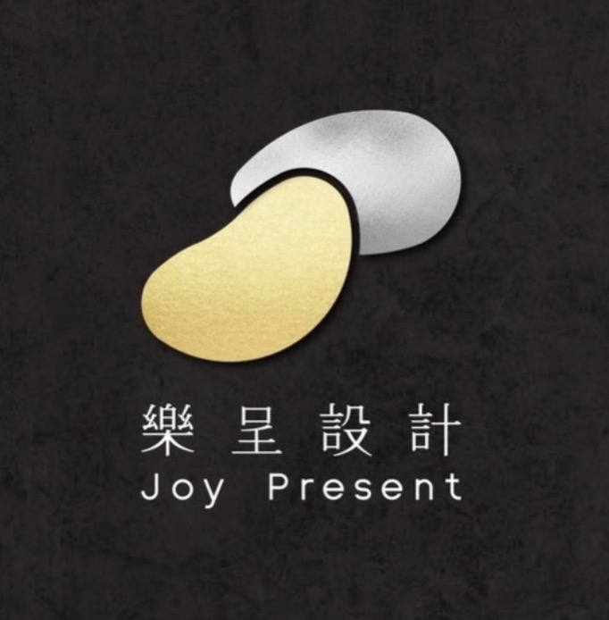
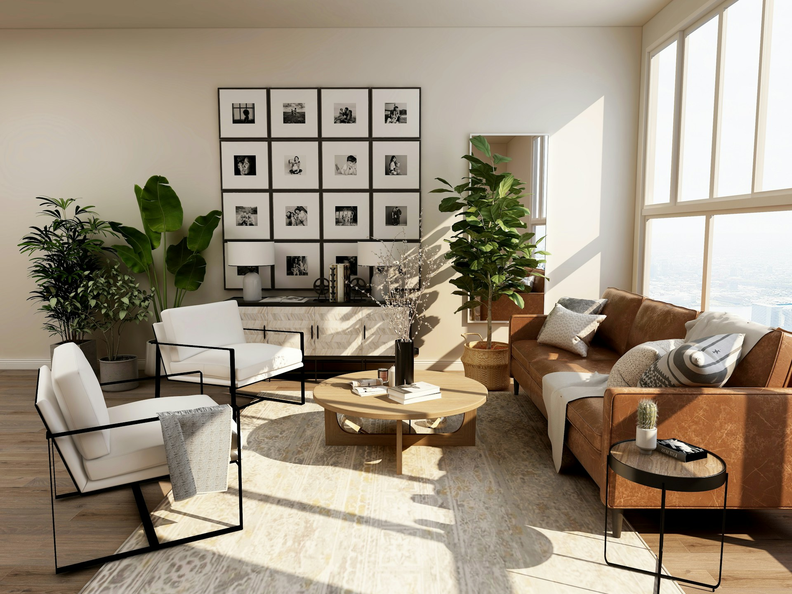

從容的第一印象
從入口導引、接待視線到候診座距，讓每次到訪都有清楚、舒適的開始。

樂呈設計JOY PRESENT細膩於形，溫暖於心。
一抹光、一段線條、一份剛剛好的留白。
讓你的生活想像，成為觸手可及的風景。

空間氛圍參考 · 非公司實績關於樂呈
A space to feel. A place to belong.
「樂」於生活的每個細節，
「呈」現空間最動人的樣子。
我們以人的感受為起點，梳理日常習慣與空間需求。讓光線、尺度、材質與動線彼此對話，在美感與實用之間，找到舒適而長久的平衡。
從家的安定、品牌的個性，到診療空間的安心，好的空間，不必張揚，卻能讓每一次走進，都感覺恰如其分。
從你的生活開始設計 ↗先理解如何生活，再決定空間的樣子。
讓材質與光影，溫柔承接每個日常。
在美感、機能與長期使用間找到平衡。
空間提案
從居住的溫度，到品牌的表情。
探索適合你的空間方向。
梳理生活節奏、收納需求與光線條件，讓每一處配置貼近日常，也留一點餘裕給未來。
牙醫空間
讓患者放鬆，也讓團隊從容。
把被照顧的感受，放進每一段動線。
動線概念示意，非施工圖或法規審查圖。
從入口導引、接待視線到候診座距，讓每次到訪都有清楚、舒適的開始。
依診療設備與作業需求，整合診間、諮詢與後勤分區，照顧患者與團隊的體驗。
依清潔與消毒需求評估材質表面，整合管線、收納與照明，讓細節回應實際使用。
設計流程
釐清空間條件、使用習慣
與對未來的期待。
盤點預算、設備需求
與前期法規方向。
由配置、材質到細節，
描繪一致的空間語彙。
依約定服務範圍，
協調工程與交付細節。
裝修前期指南
牙醫診所應依服務項目檢視《醫療機構設置標準》及相關附表，並向所在地衛生局確認設置、開業與空間設備要求。
醫療機構設置標準 ↗先核對使用執照與建物用途，確認是否涉及變更使用；依《建築物室內裝修管理辦法》及個案條件，評估審查與許可程序。
國土管理署・建築管理資訊 ↗依場所用途、面積、樓層與建築條件，評估消防設備、避難出口、走道及材料要求；涉及設備或圖說變更，應洽專業人員與地方消防機關。
消防署・消防安全資訊 ↗依建物適用規定評估無障礙通路、出入口與廁所；牙科 X 光設備另須確認輻射防護與設置要求，不以一般裝修規劃取代專業審查。
核能安全委員會・輻射防護資訊 ↗從一場對話開始
先寫下想法，讓空間的下一步更清楚。